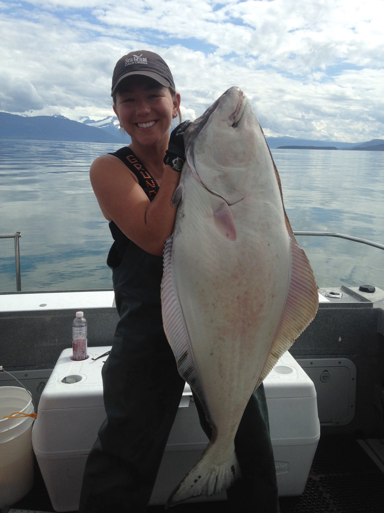

1 / 50

2 / 50
3 / 50
4 / 50

5 / 50

6 / 50

7 / 50
8 / 50

9 / 50
10 / 50

11 / 50

12 / 50

13 / 50

14 / 50

15 / 50
16 / 50

17 / 50
18 / 50
19 / 50
20 / 50

21 / 50

22 / 50

23 / 50

24 / 50
25 / 50

26 / 50

27 / 50

28 / 50

29 / 50

30 / 50

31 / 50

32 / 50

33 / 50

34 / 50
35 / 50

36 / 50

37 / 50
38 / 50

39 / 50
40 / 50

41 / 50

42 / 50
43 / 50

44 / 50
45 / 50

46 / 50

47 / 50
48 / 50
49 / 50
50 / 50